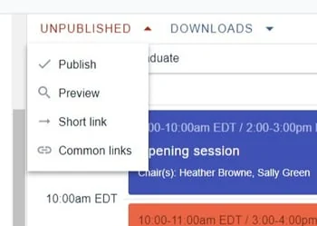
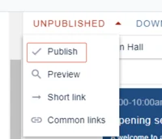
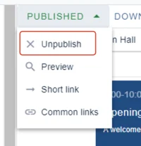
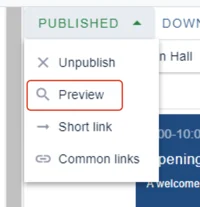
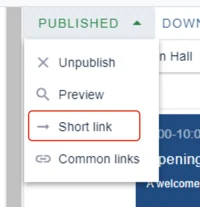
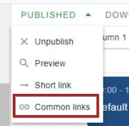
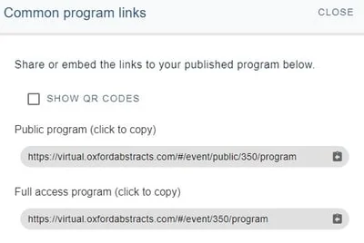
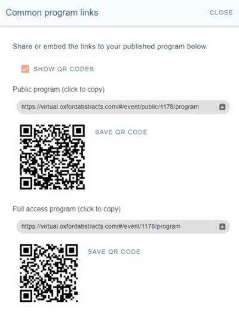
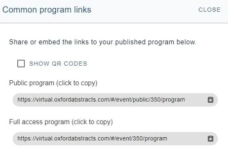

Publishing your program
For event organisersNot an organiser?
Publishing your program is simple, and any changes you make after publishing will be reflected in the live program.#
submitter, reviewer, delegate etc), please click here .
Skip to the differences between the public and full access program.
Go toEvent dashboard → Conference →Builder**
When you are ready to publish your program, navigate to the top left hand of your program builder screen, and click on the down arrow next to UNPUBLISHEDto reveal the options.

Clicking on Publish will make the program live.

Once the program is published, the status will be reflected in the drop down header. You can then unpublish / take the program offline by clicking the Unpublishoption, as and when you require.

Click Preview to see how the program will look.(NB: You will be viewing the program as an administrator so will see extra features that an end user won't - eg reported groups)

Click on Short link to create your own url suffix. You can also create a QR code in this section.

Common links reveals the links you will need to share on your website or in emails.

The options, if you have the Professional Conference package, are as below.

NB: If you have the Standard Conference, or have selected Open access, in the Professional Conference version, there will be only one link.
At the top you will see an option to show a QR code. Check the box if this is required. You can then copy and paste the QR code in any publicity materials, on or offline.

Then choose which version of the program you would like to copy and share. You can publish both simultaneously if you wish.

The table below contains the features that will be viewed by the user in each version of the program.
| Feature | Public program | Full access program |
| Abstract title, authors and affiliations | Yes | Yes |
| Abstract content including posters and presentations | No | Yes |
| Live and on-demand content | No | Yes |
| Poster gallery | No | Yes |
| Chat feature | No | Yes |
| Networking - eg viewing and creation of name badges | No | Yes |
| View comments on sessions | Yes | Yes |
| Create new comments and respond to existing ones | No | Yes |
| Chat feature - view messages in group, event and private | No | Yes |
| Chat feature - create and respond to group, event and private messages | No | Yes |
| View sponsors | Yes | Yes |
| Set timezone | Yes | Yes |
| View event-wide extra content (ie. information / welcome messages etc) | Admin controls | Yes |
Common questions#
How to embed the online programme to your event's website#
#
To embed your online programme to your events website, this will need to be done through iFrame.
In order to do this you will need to contact your IT department/developers who should be able to integrate it.
Here is the link to help embed your online programme to your event website:
https://virtual.oxfordabstracts.com/embedded-program/event-ID
e.g. https://virtual.oxfordabstracts.com/embedded-program/528
If you have any further queries, please get in touch with our Support Desk via our contact form.
Did this page solve it?
Thanks — this helps us fix it.
Didn't solve it? Ask our support team
No question is too small, and there's no charge for asking. Raise a ticket and someone who knows the software will pick it up.